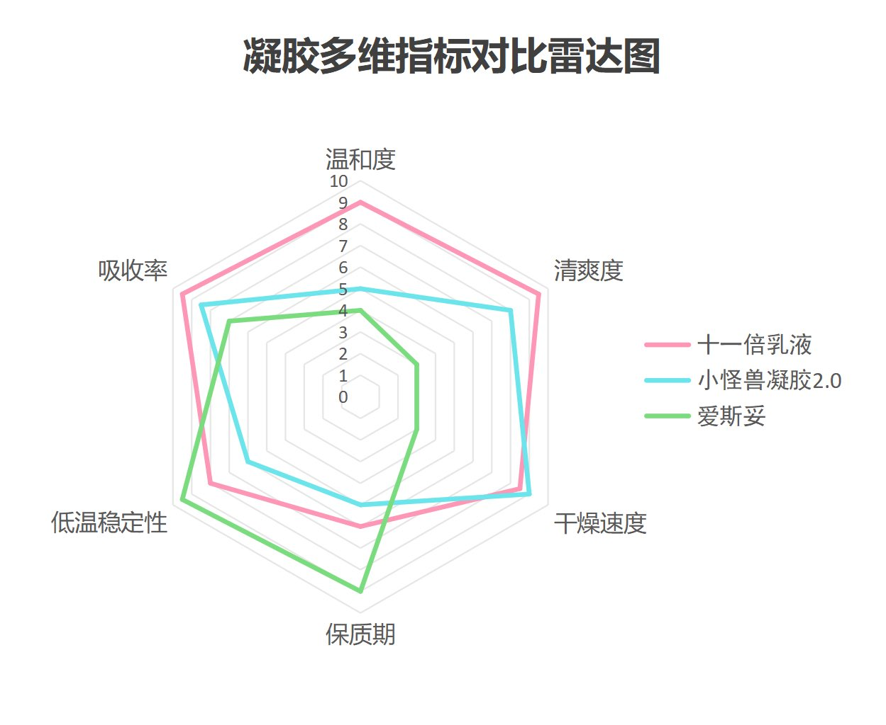
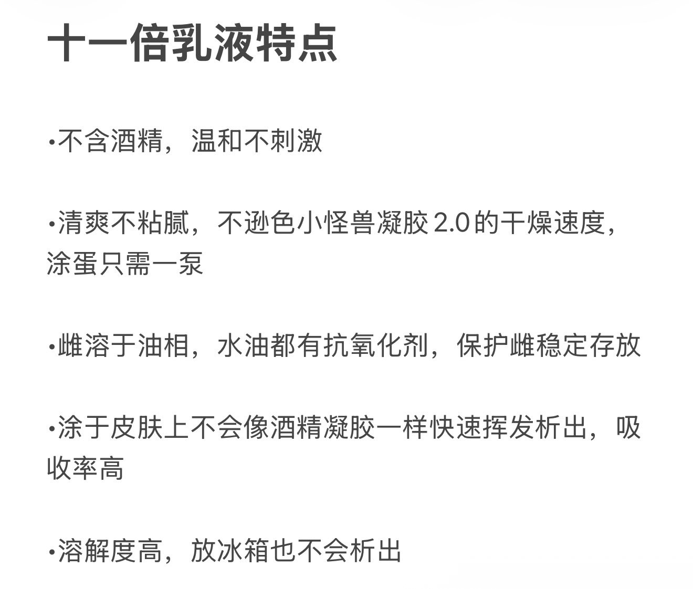
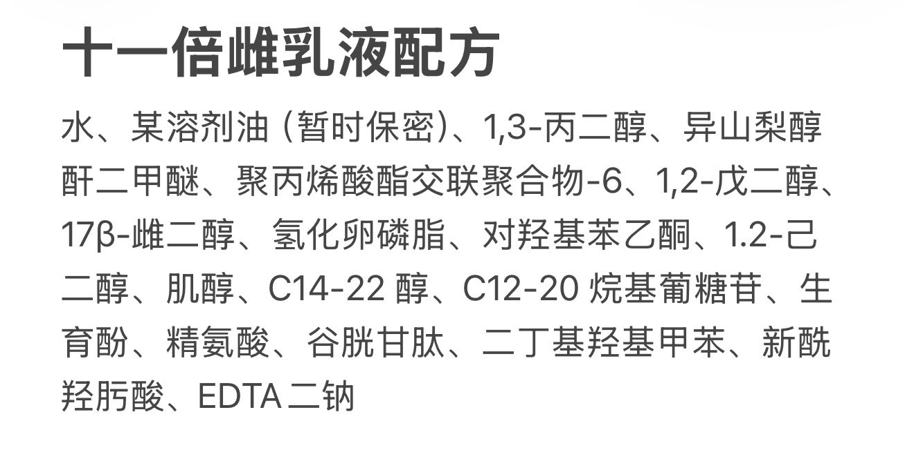

🏳️⚧️凌嘉欣🍥
@LingJiaXin233
RT @LyraSu_8964: 我做出了最好用的凝胶！
两年的迭代后，小怪兽的凝胶已经进化到了4.0稳定版-十一倍雌二醇乳液。
经过大量实验成功筛选出可以替代酒精、适配雌的良好溶剂油，温和清爽不刺激，干燥速度不亚于酒精凝胶！可以说彻底淘汰了酒精凝胶
抽奖>>关注点赞转发本推…



小怪兽2.0
@LyraSu_8964
我做出了最好用的凝胶！
两年的迭代后，小怪兽的凝胶已经进化到了4.0稳定版-十一倍雌二醇乳液。
经过大量实验成功筛选出可以替代酒精、适配雌的良好溶剂油，温和清爽不刺激，干燥速度不亚于酒精凝胶！可以说彻底淘汰了酒精凝胶
抽奖>>关注点赞转发本推，抽三名幸运观众获得正装一支
截止至4月5日开奖 https://t.co/Mtz9DsroMq